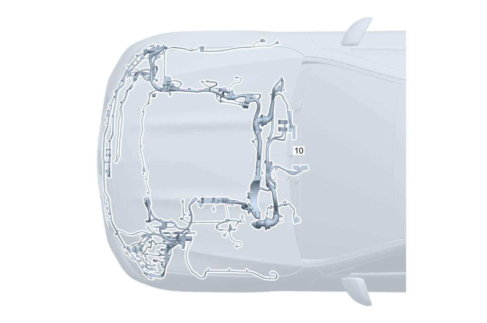

| № | Артикул | Название | Кол. | Примечание | Ограничение |
|---|---|---|---|---|---|
| 10 | A 177 540 83 24 | Электрический жгут | 1 | Жгут электропроводки двигателя на кузове [001660] В ЖГУТЕ ЭЛЕКТРОПРОВОДКИ ИМЕЮТСЯ СООТВЕТСТВ. СПЕЦ.ИСПОЛНЕНИЯ СОГЛАСНО ЗАВОДСКОМУ НОМЕРУ АВТОМОБИЛЯ [622] ПРИ ЗАКАЗЕ УКАЗАТЬ ИДЕНТ.№ | |
| 20 | Q 000000000002 | - Возможен заказ только отдельных компонентов жгута проводов | 1 | Звукогенератор (передний) Рулевое управление: Влево | ME10+B53+(804/804+054/805) |
| 20 | Q 000000000002 | - Возможен заказ только отдельных компонентов жгута проводов | 1 | Звукогенератор (передний) Рулевое управление: Влево | ME10+B53 |
| 20 | Q 000000000002 | - Возможен заказ только отдельных компонентов жгута проводов | 1 | Звукогенератор (передний) Рулевое управление: Вправо | ME10+B53+(804/804+054/805) |
| 20 | Q 000000000002 | - Возможен заказ только отдельных компонентов жгута проводов | 1 | Звукогенератор (передний) Рулевое управление: Вправо | ME10+B53 |
| 20 | Q 000000000002 | - Возможен заказ только отдельных компонентов жгута проводов | 1 | Расширительный бачок системы охлаждения Рулевое управление: Влево | ME10+(804/804+054/805) |
| 20 | Q 000000000002 | - Возможен заказ только отдельных компонентов жгута проводов | 1 | Расширительный бачок системы охлаждения Рулевое управление: Влево | ME10 |
| 20 | Q 000000000002 | - Возможен заказ только отдельных компонентов жгута проводов | 1 | Дифференциальный датчик давления Рулевое управление: Влево | ME10+(804/804+054/805) |
| 20 | Q 000000000002 | - Возможен заказ только отдельных компонентов жгута проводов | 1 | Дифференциальный датчик давления Рулевое управление: Влево | ME10 |
| 20 | Q 000000000002 | - Возможен заказ только отдельных компонентов жгута проводов | 1 | Дифференциальный датчик давления Рулевое управление: Вправо | ME10+(804/804+054/805) |
| 20 | Q 000000000002 | - Возможен заказ только отдельных компонентов жгута проводов | 1 | Дифференциальный датчик давления Рулевое управление: Вправо | ME10 |
| 20 | Q 000000000002 | - Возможен заказ только отдельных компонентов жгута проводов | 1 | Дифференциальный датчик давления Рулевое управление: Влево | ME10+(961/964/999/3S6/3S7)+(804/804+054/805) |
| 20 | Q 000000000002 | - Возможен заказ только отдельных компонентов жгута проводов | 1 | Дифференциальный датчик давления Рулевое управление: Влево | ME10+(3S6/3S7) |
| 20 | Q 000000000002 | - Возможен заказ только отдельных компонентов жгута проводов | 1 | Дифференциальный датчик давления Рулевое управление: Влево | ME10+(3S6/3S7/3S8) |
| 20 | Q 000000000002 | - Возможен заказ только отдельных компонентов жгута проводов | 1 | Дифференциальный датчик давления Рулевое управление: Влево | ME10+(3S6/3S8) |
| 20 | Q 000000000002 | - Возможен заказ только отдельных компонентов жгута проводов | 1 | Дифференциальный датчик давления Рулевое управление: Вправо | ME10+(961/964/999/3S6/3S7)+(804/804+054/805) |
| 20 | Q 000000000002 | - Возможен заказ только отдельных компонентов жгута проводов | 1 | Дифференциальный датчик давления Рулевое управление: Вправо | ME10+(3S6/3S7) |
| 20 | Q 000000000002 | - Возможен заказ только отдельных компонентов жгута проводов | 1 | Дифференциальный датчик давления Рулевое управление: Вправо | ME10+(3S6/3S7/3S8) |
| 20 | Q 000000000002 | - Возможен заказ только отдельных компонентов жгута проводов | 1 | Дифференциальный датчик давления Рулевое управление: Вправо | ME10+(3S6/3S8) |
| 20 | Q 000000000002 | - Возможен заказ только отдельных компонентов жгута проводов | 1 | Устройство отключения высоковольтного оборудования Рулевое управление: Влево | ME10+(804/804+054/805) |
| 20 | Q 000000000002 | - Возможен заказ только отдельных компонентов жгута проводов | 1 | Устройство отключения высоковольтного оборудования Рулевое управление: Влево | ME10 |
| 20 | Q 000000000002 | - Возможен заказ только отдельных компонентов жгута проводов | 1 | Устройство отключения высоковольтного оборудования Рулевое управление: Вправо | ME10+(804/804+054/805) |
| 20 | Q 000000000002 | - Возможен заказ только отдельных компонентов жгута проводов | 1 | Устройство отключения высоковольтного оборудования Рулевое управление: Вправо | ME10 |
| 20 | Q 000000000002 | - Возможен заказ только отдельных компонентов жгута проводов | 1 | Датчик мелкодисперсной пыли Рулевое управление: Влево | P53 |
| 20 | Q 000000000002 | - Возможен заказ только отдельных компонентов жгута проводов | 1 | Электронная система стабилизации движения "ESP®" Рулевое управление: Влево | ME10+(804/804+054/805) |
| 20 | Q 000000000002 | - Возможен заказ только отдельных компонентов жгута проводов | 1 | Электронная система стабилизации движения "ESP®" Рулевое управление: Влево | ME10 |
| 20 | Q 000000000002 | - Возможен заказ только отдельных компонентов жгута проводов | 1 | Электронная система стабилизации движения "ESP®" Рулевое управление: Вправо | ME10+(804/804+054/805) |
| 20 | Q 000000000002 | - Возможен заказ только отдельных компонентов жгута проводов | 1 | Электронная система стабилизации движения "ESP®" Рулевое управление: Вправо | ME10 |
| 20 | Q 000000000002 | - Возможен заказ только отдельных компонентов жгута проводов | 1 | Звуковой сигнал справа Рулевое управление: Влево | P59/950/B08/821/822/683L |
| 20 | Q 000000000002 | - Возможен заказ только отдельных компонентов жгута проводов | 1 | Звуковой сигнал справа Рулевое управление: Влево | P59/950/B08/821 |
| 20 | Q 000000000002 | - Возможен заказ только отдельных компонентов жгута проводов | 1 | Звуковой сигнал справа Рулевое управление: Вправо | P59/950/B08/821/822/683L |
| 20 | Q 000000000002 | - Возможен заказ только отдельных компонентов жгута проводов | 1 | Звуковой сигнал справа Рулевое управление: Вправо | P59/950/B08/821 |
| 20 | Q 000000000002 | - Возможен заказ только отдельных компонентов жгута проводов | 1 | Базовый объём для двигателя Рулевое управление: Влево | ME10+(804/804+054/805) |
| 20 | Q 000000000002 | - Возможен заказ только отдельных компонентов жгута проводов | 1 | Базовый объём для двигателя Рулевое управление: Влево | ME10 |
| 20 | Q 000000000002 | - Возможен заказ только отдельных компонентов жгута проводов | 1 | Базовый объём для двигателя Рулевое управление: Вправо | ME10+(804/804+054/805) |
| 20 | Q 000000000002 | - Возможен заказ только отдельных компонентов жгута проводов | 1 | Базовый объём для двигателя Рулевое управление: Вправо | ME10 |
| 20 | Q 000000000002 | - Возможен заказ только отдельных компонентов жгута проводов | 1 | Базовый объём для двигателя Рулевое управление: Влево | ME10+(805+055/806/807) |
| 20 | Q 000000000002 | - Возможен заказ только отдельных компонентов жгута проводов | 1 | Базовый объём для двигателя Рулевое управление: Влево | ME10 |
| 20 | Q 000000000002 | - Возможен заказ только отдельных компонентов жгута проводов | 1 | Базовый объём для двигателя Рулевое управление: Вправо | ME10+(805+055/806/807) |
| 20 | Q 000000000002 | - Возможен заказ только отдельных компонентов жгута проводов | 1 | Базовый объём для двигателя Рулевое управление: Вправо | ME10 |
| 20 | Q 000000000002 | - Возможен заказ только отдельных компонентов жгута проводов | 1 | Датчик мелкодисперсной пыли Рулевое управление: Влево | P53+(804/804+054/805) |
| 20 | Q 000000000002 | - Возможен заказ только отдельных компонентов жгута проводов | 1 | Датчик мелкодисперсной пыли Рулевое управление: Влево | P53 |
| 20 | Q 000000000002 | - Возможен заказ только отдельных компонентов жгута проводов | 1 | Дифференциальный датчик давления Рулевое управление: Влево | M282+(804/804+054/805) |
| 20 | Q 000000000002 | - Возможен заказ только отдельных компонентов жгута проводов | 1 | Дифференциальный датчик давления Рулевое управление: Влево | M282 |
| 20 | Q 000000000002 | - Возможен заказ только отдельных компонентов жгута проводов | 1 | Дифференциальный датчик давления Рулевое управление: Вправо | M282+(804/804+054/805) |
| 20 | Q 000000000002 | - Возможен заказ только отдельных компонентов жгута проводов | 1 | Дифференциальный датчик давления Рулевое управление: Вправо | M282 |
| 20 | Q 000000000002 | - Возможен заказ только отдельных компонентов жгута проводов | 1 | Дифференциальный датчик давления Рулевое управление: Влево | M282+(598/961/999/4S7)+(804/804+054/805) |
| 20 | Q 000000000002 | - Возможен заказ только отдельных компонентов жгута проводов | 1 | Дифференциальный датчик давления Рулевое управление: Влево | M282+4S7 |
| 20 | Q 000000000002 | - Возможен заказ только отдельных компонентов жгута проводов | 1 | Дифференциальный датчик давления Рулевое управление: Вправо | M282+(598/961/999/4S7)+(804/804+054/805) |
| 20 | Q 000000000002 | - Возможен заказ только отдельных компонентов жгута проводов | 1 | Дифференциальный датчик давления Рулевое управление: Вправо | M282+4S7 |
| 20 | Q 000000000002 | - Возможен заказ только отдельных компонентов жгута проводов | 1 | Электромагнитная муфта Рулевое управление: Влево | M282+B09+(804/804+054/805) |
| 20 | Q 000000000002 | - Возможен заказ только отдельных компонентов жгута проводов | 1 | Электромагнитная муфта Рулевое управление: Влево | M282+B09 |
| 20 | Q 000000000002 | - Возможен заказ только отдельных компонентов жгута проводов | 1 | Электромагнитная муфта Рулевое управление: Вправо | M282+B09+(804/804+054/805) |
| 20 | Q 000000000002 | - Возможен заказ только отдельных компонентов жгута проводов | 1 | Электромагнитная муфта Рулевое управление: Вправо | M282+B09 |
| 20 | Q 000000000002 | - Возможен заказ только отдельных компонентов жгута проводов | 1 | Датчик температуры сажевого фильтра Рулевое управление: Влево | M282+(598/961/999/4S7)+(804/804+054/805) |
| 20 | Q 000000000002 | - Возможен заказ только отдельных компонентов жгута проводов | 1 | Датчик температуры сажевого фильтра Рулевое управление: Влево | M282+4S7 |
| 20 | Q 000000000002 | - Возможен заказ только отдельных компонентов жгута проводов | 1 | Датчик температуры сажевого фильтра Рулевое управление: Вправо | M282+(598/961/999/4S7)+(804/804+054/805) |
| 20 | Q 000000000002 | - Возможен заказ только отдельных компонентов жгута проводов | 1 | Датчик температуры сажевого фильтра Рулевое управление: Вправо | M282+4S7 |
| 20 | Q 000000000002 | - Возможен заказ только отдельных компонентов жгута проводов | 1 | Датчик температуры наружного воздуха B14 TO N10 Рулевое управление: Влево | (804/804+054/805) |
| 20 | Q 000000000002 | - Возможен заказ только отдельных компонентов жгута проводов | 1 | Датчик температуры наружного воздуха B14 TO N10 Рулевое управление: Влево | |
| 20 | Q 000000000002 | - Возможен заказ только отдельных компонентов жгута проводов | 1 | Датчик температуры наружного воздуха B14 TO N10 Рулевое управление: Вправо | (804/804+054/805) |
| 20 | Q 000000000002 | - Возможен заказ только отдельных компонентов жгута проводов | 1 | Датчик температуры наружного воздуха B14 TO N10 Рулевое управление: Вправо | |
| 20 | Q 000000000002 | - Возможен заказ только отдельных компонентов жгута проводов | 1 | Провод электропитания блока силовых предохранителей F150/1 TO F152/4 Рулевое управление: Влево | (M654/(M260/M282)+8B1)+(804/804+054/805) |
| 20 | Q 000000000002 | - Возможен заказ только отдельных компонентов жгута проводов | 1 | Провод электропитания блока силовых предохранителей F150/1 TO F152/4 Рулевое управление: Влево | (M654/(M260/M282)+8B1) |
| 20 | Q 000000000002 | - Возможен заказ только отдельных компонентов жгута проводов | 1 | Провод электропитания блока силовых предохранителей F150/1 TO F152/4 Рулевое управление: Вправо | (M654/(M260/M282)+8B1)+(804/804+054/805) |
| 20 | Q 000000000002 | - Возможен заказ только отдельных компонентов жгута проводов | 1 | Провод электропитания блока силовых предохранителей F150/1 TO F152/4 Рулевое управление: Вправо | (M654/(M260/M282)+8B1) |
| 20 | Q 000000000002 | - Возможен заказ только отдельных компонентов жгута проводов | 1 | Провод электропитания блока силовых предохранителей F150/1 TO F152/4 Рулевое управление: Влево | (M260/M282/M654+913)+(804/804+054/805) |
| 20 | Q 000000000002 | - Возможен заказ только отдельных компонентов жгута проводов | 1 | Провод электропитания блока силовых предохранителей F150/1 TO F152/4 Рулевое управление: Влево | (M260/M282/M654+913) |
| 20 | Q 000000000002 | - Возможен заказ только отдельных компонентов жгута проводов | 1 | Провод электропитания блока силовых предохранителей F150/1 TO F152/4 Рулевое управление: Вправо | (M260/M282/M654+913)+(804/804+054/805) |
| 20 | Q 000000000002 | - Возможен заказ только отдельных компонентов жгута проводов | 1 | Провод электропитания блока силовых предохранителей F150/1 TO F152/4 Рулевое управление: Вправо | (M260/M282/M654+913) |
| 20 | Q 000000000002 | - Возможен заказ только отдельных компонентов жгута проводов | 1 | Звуковой сигнал справа Рулевое управление: Влево | (P59/950/B08/821)+(804/804+054/805) |
| 20 | Q 000000000002 | - Возможен заказ только отдельных компонентов жгута проводов | 1 | Звуковой сигнал справа Рулевое управление: Влево | (P59/950/B08/821) |
| 20 | Q 000000000002 | - Возможен заказ только отдельных компонентов жгута проводов | 1 | Звуковой сигнал справа Рулевое управление: Вправо | (P59/950/B08/821)+(804/804+054/805) |
| 20 | Q 000000000002 | - Возможен заказ только отдельных компонентов жгута проводов | 1 | Звуковой сигнал справа Рулевое управление: Вправо | (P59/950/B08/821) |
| 20 | Q 000000000002 | - Возможен заказ только отдельных компонентов жгута проводов | 1 | Блок силовых предохранителей моторного отсека F150/1 to F150/3 | B01+(804/804+054/805) |
| 20 | Q 000000000002 | - Возможен заказ только отдельных компонентов жгута проводов | 1 | Блок силовых предохранителей моторного отсека F150/1 to F150/3 | B01 |
| 20 | Q 000000000002 | - Возможен заказ только отдельных компонентов жгута проводов | 1 | DISTRONIC PLUS Рулевое управление: Влево | 233+ME10+(804/804+054/805) |
| 20 | Q 000000000002 | - Возможен заказ только отдельных компонентов жгута проводов | 1 | DISTRONIC PLUS Рулевое управление: Влево | 233+ME10 |
| 20 | Q 000000000002 | - Возможен заказ только отдельных компонентов жгута проводов | 1 | DISTRONIC PLUS Рулевое управление: Вправо | 233+ME10+(804/804+054/805) |
| 20 | Q 000000000002 | - Возможен заказ только отдельных компонентов жгута проводов | 1 | DISTRONIC PLUS Рулевое управление: Вправо | 233+ME10 |
| 20 | Q 000000000002 | - Возможен заказ только отдельных компонентов жгута проводов | 1 | Шинная система FlexRay Рулевое управление: Влево | ME10+(804/804+054/805) |
| 20 | Q 000000000002 | - Возможен заказ только отдельных компонентов жгута проводов | 1 | Шинная система FlexRay Рулевое управление: Влево | ME10 |
| 20 | Q 000000000002 | - Возможен заказ только отдельных компонентов жгута проводов | 1 | Шинная система FlexRay Рулевое управление: Вправо | ME10+(804/804+054/805) |
| 20 | Q 000000000002 | - Возможен заказ только отдельных компонентов жгута проводов | 1 | Шинная система FlexRay Рулевое управление: Вправо | ME10 |
| 20 | Q 000000000002 | - Возможен заказ только отдельных компонентов жгута проводов | 1 | активный капот Рулевое управление: Влево | U60+(804/804+054/805) |
| 20 | Q 000000000002 | - Возможен заказ только отдельных компонентов жгута проводов | 1 | активный капот Рулевое управление: Влево | U60 |
| 20 | Q 000000000002 | - Возможен заказ только отдельных компонентов жгута проводов | 1 | активный капот Рулевое управление: Вправо | U60+(804/804+054/805) |
| 20 | Q 000000000002 | - Возможен заказ только отдельных компонентов жгута проводов | 1 | активный капот Рулевое управление: Вправо | U60 |
| 20 | Q 000000000002 | - Возможен заказ только отдельных компонентов жгута проводов | 1 | Датчик дистанции системы PARKTRONIC Рулевое управление: Влево | 235 |
| 20 | Q 000000000002 | - Возможен заказ только отдельных компонентов жгута проводов | 1 | Датчик дистанции системы PARKTRONIC Рулевое управление: Вправо | 235 |
| 20 | Q 000000000002 | - Возможен заказ только отдельных компонентов жгута проводов | 1 | Галогенный световой прибор Рулевое управление: Влево | 620 |
| 20 | Q 000000000002 | - Возможен заказ только отдельных компонентов жгута проводов | 1 | Галогенный световой прибор Рулевое управление: Вправо | 613 |
| 20 | Q 000000000002 | - Возможен заказ только отдельных компонентов жгута проводов | 1 | Модуль статического светодиодного освещения Рулевое управление: Влево | 632 |
| 20 | Q 000000000002 | - Возможен заказ только отдельных компонентов жгута проводов | 1 | Модуль статического светодиодного освещения Рулевое управление: Влево | 459+632 |
| 20 | Q 000000000002 | - Возможен заказ только отдельных компонентов жгута проводов | 1 | Модуль статического светодиодного освещения Рулевое управление: Вправо | 631 |
| 20 | Q 000000000002 | - Возможен заказ только отдельных компонентов жгута проводов | 1 | Модуль статического светодиодного освещения Рулевое управление: Вправо | 459+631 |
| 20 | Q 000000000002 | - Возможен заказ только отдельных компонентов жгута проводов | 1 | Галогенный световой прибор Рулевое управление: Влево | 620+(804/804+054/805) |
| 20 | Q 000000000002 | - Возможен заказ только отдельных компонентов жгута проводов | 1 | Галогенный световой прибор Рулевое управление: Вправо | 613+(804/804+054/805) |
| 20 | Q 000000000002 | - Возможен заказ только отдельных компонентов жгута проводов | 1 | Модуль статического светодиодного освещения Рулевое управление: Влево | 632+(804/804+054/805) |
| 20 | Q 000000000002 | - Возможен заказ только отдельных компонентов жгута проводов | 1 | Модуль статического светодиодного освещения Рулевое управление: Влево | 632 |
| 20 | Q 000000000002 | - Возможен заказ только отдельных компонентов жгута проводов | 1 | Модуль статического светодиодного освещения Рулевое управление: Вправо | 631+(804/804+054/805) |
| 20 | Q 000000000002 | - Возможен заказ только отдельных компонентов жгута проводов | 1 | Модуль статического светодиодного освещения Рулевое управление: Вправо | 631 |
| 20 | Q 000000000002 | - Возможен заказ только отдельных компонентов жгута проводов | 1 | Модуль статического светодиодного освещения Рулевое управление: Влево | 632+459+(804/804+054/805) |
| 20 | Q 000000000002 | - Возможен заказ только отдельных компонентов жгута проводов | 1 | Модуль статического светодиодного освещения Рулевое управление: Влево | 632+459 |
| 20 | Q 000000000002 | - Возможен заказ только отдельных компонентов жгута проводов | 1 | Модуль статического светодиодного освещения Рулевое управление: Вправо | 631+459+(804/804+054/805) |
| 20 | Q 000000000002 | - Возможен заказ только отдельных компонентов жгута проводов | 1 | Модуль статического светодиодного освещения Рулевое управление: Вправо | 631+459 |
| 20 | Q 000000000002 | - Возможен заказ только отдельных компонентов жгута проводов | 1 | Модуль динамического светодиодного освещения Рулевое управление: Влево | (640/642)+459+(804/804+054/805) |
| 20 | Q 000000000002 | - Возможен заказ только отдельных компонентов жгута проводов | 1 | Модуль динамического светодиодного освещения Рулевое управление: Влево | (640/642)+459 |
| 20 | Q 000000000002 | - Возможен заказ только отдельных компонентов жгута проводов | 1 | Модуль динамического светодиодного освещения Рулевое управление: Вправо | 641+459+(804/804+054/805) |
| 20 | Q 000000000002 | - Возможен заказ только отдельных компонентов жгута проводов | 1 | Модуль динамического светодиодного освещения Рулевое управление: Вправо | 641+459 |
| 20 | Q 000000000002 | - Возможен заказ только отдельных компонентов жгута проводов | 1 | Модуль динамического светодиодного освещения Рулевое управление: Влево | (640/642)+ME10+(804/804+054/805) |
| 20 | Q 000000000002 | - Возможен заказ только отдельных компонентов жгута проводов | 1 | Модуль динамического светодиодного освещения Рулевое управление: Влево | (640/642)+ME10 |
| 20 | Q 000000000002 | - Возможен заказ только отдельных компонентов жгута проводов | 1 | Модуль динамического светодиодного освещения Рулевое управление: Вправо | 641+ME10+(804/804+054/805) |
| 20 | Q 000000000002 | - Возможен заказ только отдельных компонентов жгута проводов | 1 | Модуль динамического светодиодного освещения Рулевое управление: Вправо | 641+ME10 |
| 20 | Q 000000000002 | - Возможен заказ только отдельных компонентов жгута проводов | 1 | Датчик качества воздуха и автономный отопитель Рулевое управление: Влево | 228+581 |
| 20 | Q 000000000002 | - Возможен заказ только отдельных компонентов жгута проводов | 1 | Датчик качества воздуха и автономный отопитель Рулевое управление: Вправо | 228+581 |
| 20 | Q 000000000002 | - Возможен заказ только отдельных компонентов жгута проводов | 1 | Датчик концентрации вредных веществ Рулевое управление: Влево | 581/830 |
| 20 | Q 000000000002 | - Возможен заказ только отдельных компонентов жгута проводов | 1 | Датчик концентрации вредных веществ Рулевое управление: Вправо | 581 |
| 20 | Q 000000000002 | - Возможен заказ только отдельных компонентов жгута проводов | 1 | Автономный отопитель Рулевое управление: Влево | 228 |
| 20 | Q 000000000002 | - Возможен заказ только отдельных компонентов жгута проводов | 1 | Автономный отопитель Рулевое управление: Вправо | 228 |
| 20 | Q 000000000002 | - Возможен заказ только отдельных компонентов жгута проводов | 1 | Переключающий клапан автономного отопителя | 228+(M260/M282) |
| 20 | Q 000000000002 | - Возможен заказ только отдельных компонентов жгута проводов | 1 | Циркуляционный насос охлаждающей жидкости Рулевое управление: Влево | (M282/M260)+228+581 |
| 20 | Q 000000000002 | - Возможен заказ только отдельных компонентов жгута проводов | 1 | Обогреваемый трубопровод омывающей жидкости Рулевое управление: Влево | 875 |
| 20 | Q 000000000002 | - Возможен заказ только отдельных компонентов жгута проводов | 1 | Обогреваемый трубопровод омывающей жидкости Рулевое управление: Вправо | 875 |
| 20 | Q 000000000002 | - Возможен заказ только отдельных компонентов жгута проводов | 1 | Дозирующий топливный насос автономного отопителя Рулевое управление: Влево | 228 |
| 20 | Q 000000000002 | - Возможен заказ только отдельных компонентов жгута проводов | 1 | Дозирующий топливный насос автономного отопителя Рулевое управление: Вправо | 228 |
| 20 | Q 000000000002 | - Возможен заказ только отдельных компонентов жгута проводов | 1 | Дозирующий топливный насос автономного отопителя Рулевое управление: Влево | 228+(804/804+054/805) |
| 20 | Q 000000000002 | - Возможен заказ только отдельных компонентов жгута проводов | 1 | Дозирующий топливный насос автономного отопителя Рулевое управление: Влево | 228 |
| 20 | Q 000000000002 | - Возможен заказ только отдельных компонентов жгута проводов | 1 | Высоковольтная АКБ Рулевое управление: Влево | ME10+(804/804+054/805) |
| 20 | Q 000000000002 | - Возможен заказ только отдельных компонентов жгута проводов | 1 | Высоковольтная АКБ Рулевое управление: Влево | ME10 |
| 20 | Q 000000000002 | - Возможен заказ только отдельных компонентов жгута проводов | 1 | Высоковольтная АКБ Рулевое управление: Вправо | ME10+(804/804+054/805) |
| 20 | Q 000000000002 | - Возможен заказ только отдельных компонентов жгута проводов | 1 | Высоковольтная АКБ Рулевое управление: Вправо | ME10 |
| 20 | Q 000000000002 | - Возможен заказ только отдельных компонентов жгута проводов | 1 | Высоковольтная АКБ Рулевое управление: Влево | ME10+581+(804/804+054/805) |
| 20 | Q 000000000002 | - Возможен заказ только отдельных компонентов жгута проводов | 1 | Высоковольтная АКБ Рулевое управление: Влево | ME10+581 |
| 20 | Q 000000000002 | - Возможен заказ только отдельных компонентов жгута проводов | 1 | Высоковольтная АКБ Рулевое управление: Вправо | ME10+581+(804/804+054/805) |
| 20 | Q 000000000002 | - Возможен заказ только отдельных компонентов жгута проводов | 1 | Высоковольтная АКБ Рулевое управление: Вправо | ME10+581 |
| 20 | Q 000000000002 | - Возможен заказ только отдельных компонентов жгута проводов | 1 | Обогреваемый трубопровод омывающей жидкости Рулевое управление: Влево | 875+(804/804+054/805) |
| 20 | Q 000000000002 | - Возможен заказ только отдельных компонентов жгута проводов | 1 | Обогреваемый трубопровод омывающей жидкости Рулевое управление: Влево | 875 |
| 20 | Q 000000000002 | - Возможен заказ только отдельных компонентов жгута проводов | 1 | Обогреваемый трубопровод омывающей жидкости Рулевое управление: Вправо | 875+(804/804+054/805) |
| 20 | Q 000000000002 | - Возможен заказ только отдельных компонентов жгута проводов | 1 | Обогреваемый трубопровод омывающей жидкости Рулевое управление: Вправо | 875 |
| 20 | Q 000000000002 | - Возможен заказ только отдельных компонентов жгута проводов | 1 | Амортизаторы с регулируемой жёсткостью и датчики уровня а/м Рулевое управление: Влево | 459+(804/804+054/805) |
| 20 | Q 000000000002 | - Возможен заказ только отдельных компонентов жгута проводов | 1 | Амортизаторы с регулируемой жёсткостью и датчики уровня а/м Рулевое управление: Влево | 459 |
| 20 | Q 000000000002 | - Возможен заказ только отдельных компонентов жгута проводов | 1 | Амортизаторы с регулируемой жёсткостью и датчики уровня а/м Рулевое управление: Вправо | 459+(804/804+054/805) |
| 20 | Q 000000000002 | - Возможен заказ только отдельных компонентов жгута проводов | 1 | Амортизаторы с регулируемой жёсткостью и датчики уровня а/м Рулевое управление: Вправо | 459 |
| 50 | A 177 540 96 37 | - Электрический жгут | 1 | Базовый объём для двигателя Рулевое управление: Влево | |
| 50 | A 177 540 97 37 | - Электрический жгут | 1 | Базовый объём для двигателя Рулевое управление: Вправо | |
| 80 | A 177 540 87 04 | - Электрический жгут | 1 | активный капот Рулевое управление: Влево | U60 |
| 80 | A 177 540 88 04 | - Электрический жгут | 1 | активный капот Рулевое управление: Вправо | U60 |
| 140 | A 177 540 87 13 | - Электрический жгут | 1 | Провод электропитания блока силовых предохранителей F150/1 TO F152/4 Рулевое управление: Влево | M654/8B1 |
| 140 | A 177 540 88 13 | - Электрический жгут | 1 | Провод электропитания блока силовых предохранителей F150/1 TO F152/4 Рулевое управление: Вправо | M654/8B1 |
| 140 | A 177 540 89 13 | - Электрический жгут | 1 | Провод электропитания блока силовых предохранителей F150/1 TO F152/4 Рулевое управление: Влево | M654+913/M260/M282/M139 |
| 140 | A 177 540 90 13 | - Электрический жгут | 1 | Провод электропитания блока силовых предохранителей F150/1 TO F152/4 Рулевое управление: Вправо | M654+913/M260/M282/M139 |
| 195 | A 177 540 84 52 | - Электрический жгут | 1 | Переключающий клапан автономного отопителя | 228+(M260/M282)+(804/804+054/805) |
| 195 | A 177 540 84 52 | - Электрический жгут | 1 | Переключающий клапан автономного отопителя | 228+(M260/M282) |
| 350 | A 177 540 56 04 | - Электрический жгут | 1 | Амортизаторы с регулируемой жёсткостью и датчики уровня а/м Рулевое управление: Влево | 459 |
| 350 | A 177 540 57 04 | - Электрический жгут | 1 | Амортизаторы с регулируемой жёсткостью и датчики уровня а/м Рулевое управление: Вправо | 459 |
| 390 | A 177 540 58 04 | - Электрический жгут | 1 | Система "Distronic" / система предупреждения о столкновении Рулевое управление: Влево | 239/258 |
| 390 | A 177 540 59 04 | - Электрический жгут | 1 | Система "Distronic" / система предупреждения о столкновении Рулевое управление: Вправо | 239/258 |
| 390 | A 177 540 35 26 | - Электрический жгут | 1 | Шинная система FlexRay Рулевое управление: Вправо | |
| 390 | A 177 540 56 14 | - Электрический жгут | 1 | Шинная система FlexRay Рулевое управление: Влево | |
| 390 | A 177 540 60 04 | - Электрический жгут | 1 | DISTRONIC PLUS Рулевое управление: Влево | 233 |
| 390 | A 177 540 61 04 | - Электрический жгут | 1 | DISTRONIC PLUS Рулевое управление: Вправо | 233 |
| 390 | Q 000000000002 | - Возможен заказ только отдельных компонентов жгута проводов | 1 | Система "Distronic" / система предупреждения о столкновении Рулевое управление: Влево | (239/258)+ME10+(804/804+054/805) |
| 390 | Q 000000000002 | - Возможен заказ только отдельных компонентов жгута проводов | 1 | Система "Distronic" / система предупреждения о столкновении Рулевое управление: Влево | (239/258)+ME10 |
| 390 | Q 000000000002 | - Возможен заказ только отдельных компонентов жгута проводов | 1 | Система "Distronic" / система предупреждения о столкновении Рулевое управление: Вправо | (239/258)+ME10+(804/804+054/805) |
| 390 | Q 000000000002 | - Возможен заказ только отдельных компонентов жгута проводов | 1 | Система "Distronic" / система предупреждения о столкновении Рулевое управление: Вправо | (239/258)+ME10 |
| 400 | A 177 540 48 14 | - Электрический жгут | 1 | Жалюзи радиатора Рулевое управление: Влево | 2U1/(98B+2U1) |
| 400 | Q 000000000002 | - Возможен заказ только отдельных компонентов жгута проводов | 1 | Жалюзи радиатора Рулевое управление: Вправо | 2U1/(98B+2U1) |
| 400 | A 177 540 02 53 | - Электрический жгут | 1 | Жалюзи радиатора Рулевое управление: Влево | (2U1/2U1+98B)+(804/804+054/805) |
| 400 | A 177 540 02 53 | - Электрический жгут | 1 | Жалюзи радиатора Рулевое управление: Влево | (2U1/2U1+98B) |
| 400 | A 177 540 03 53 | - Электрический жгут | 1 | Жалюзи радиатора Рулевое управление: Вправо | (2U1/2U1+98B)+(804/804+054/805) |
| 400 | A 177 540 03 53 | - Электрический жгут | 1 | Жалюзи радиатора Рулевое управление: Вправо | (2U1/2U1+98B) |
| 420 | A 177 540 47 28 | - Электрический жгут | 1 | Вентилятор радиатора Рулевое управление: Влево | |
| 420 | A 177 540 48 28 | - Электрический жгут | 1 | Вентилятор радиатора Рулевое управление: Вправо | |
| 420 | A 177 540 49 28 | - Электрический жгут | 1 | Вентилятор радиатора Рулевое управление: Влево | (426/429/2U1/(2U1+98B)) |
| 420 | A 177 540 50 28 | - Электрический жгут | 1 | Вентилятор радиатора Рулевое управление: Вправо | (426/429/2U1/(2U1+98B)) |
| 420 | A 177 540 37 41 | - Электрический жгут | 1 | Вентилятор радиатора Рулевое управление: Влево | ME10+(804/804+054/805) |
| 420 | A 177 540 37 41 | - Электрический жгут | 1 | Вентилятор радиатора Рулевое управление: Влево | ME10 |
| 420 | A 177 540 39 41 | - Электрический жгут | 1 | Вентилятор радиатора Рулевое управление: Вправо | ME10+(804/804+054/805) |
| 420 | A 177 540 39 41 | - Электрический жгут | 1 | Вентилятор радиатора Рулевое управление: Вправо | ME10 |
| 450 | A 177 540 01 38 | - Электрический жгут | 1 | Соединение на массу N129/1 TO W104/2 | ME08/ME10 |
| 450 | A 177 540 01 38 | - Электрический жгут | 1 | Соединение на массу N129/1 TO W104/2 | ME10 |
| 470 | A 177 540 00 38 | - Электрический жгут | 1 | Силовое электронное оборудование N129/1 TO F150/3 | ME08/ME10 |
| 470 | A 177 540 00 38 | - Электрический жгут | 1 | Силовое электронное оборудование N129/1 TO F150/3 | ME10 |
| 480 | A 177 540 64 04 | - Электрический жгут | 1 | Камера 360° Рулевое управление: Влево | 501 |
| 480 | A 177 540 84 13 | - Электрический жгут | 1 | Камера 360° Рулевое управление: Вправо | 501 |
| 480 | A 177 540 10 53 | - Электрический жгут | 1 | Камера 360° Рулевое управление: Влево | 501+(804/804+054/805) |
| 480 | A 177 540 10 53 | - Электрический жгут | 1 | Камера 360° Рулевое управление: Влево | 501 |
| 480 | A 177 540 11 53 | - Электрический жгут | 1 | Камера 360° Рулевое управление: Вправо | 501+(804/804+054/805) |
| 480 | A 177 540 11 53 | - Электрический жгут | 1 | Камера 360° Рулевое управление: Вправо | 501 |
| 700 | A 177 540 25 00 | - Электрический жгут | 1 | Массовый провод | |
| 720 | Q 000000000002 | - Возможен заказ только отдельных компонентов жгута проводов | 1 | Модуль динамического светодиодного освещения Рулевое управление: Влево | 640/642 |
| 720 | Q 000000000002 | - Возможен заказ только отдельных компонентов жгута проводов | 1 | Модуль динамического светодиодного освещения Рулевое управление: Влево | 459+(640/642) |
| 720 | Q 000000000002 | - Возможен заказ только отдельных компонентов жгута проводов | 1 | Модуль динамического светодиодного освещения Рулевое управление: Вправо | 641 |
| 720 | Q 000000000002 | - Возможен заказ только отдельных компонентов жгута проводов | 1 | Модуль динамического светодиодного освещения Рулевое управление: Вправо | 459+641 |
| 800 | A 177 540 47 53 | - Электрический жгут | 1 | Преобразователь напряжения постоянного тока Бортовая сеть 48 В Рулевое управление: Влево | M282+B01+(804/804+054/805) |
| 800 | A 177 540 47 53 | - Электрический жгут | 1 | Преобразователь напряжения постоянного тока Бортовая сеть 48 В Рулевое управление: Влево | M282+B01 |
| 800 | A 177 540 48 53 | - Электрический жгут | 1 | Преобразователь напряжения постоянного тока Бортовая сеть 48 В Рулевое управление: Вправо | M282+B01+(804/804+054/805) |
| 800 | A 177 540 48 53 | - Электрический жгут | 1 | Преобразователь напряжения постоянного тока Бортовая сеть 48 В Рулевое управление: Вправо | M282+B01 |
| 820 | A 177 540 29 06 | - Электрический жгут | 1 | Сирена сигнализации Рулевое управление: Влево | 882 |
| 820 | Q 000000000002 | - Возможен заказ только отдельных компонентов жгута проводов | 1 | Сирена сигнализации Рулевое управление: Вправо | 882 |
| 820 | A 177 540 19 53 | - Электрический жгут | 1 | Сирена сигнализации Рулевое управление: Влево | 882+(804/804+054/805) |
| 820 | A 177 540 19 53 | - Электрический жгут | 1 | Сирена сигнализации Рулевое управление: Влево | 882 |
| 820 | Q 000000000002 | - Возможен заказ только отдельных компонентов жгута проводов | 1 | Сирена сигнализации Рулевое управление: Вправо | 882+(804/804+054/805) |
| 820 | Q 000000000002 | - Возможен заказ только отдельных компонентов жгута проводов | 1 | Сирена сигнализации Рулевое управление: Вправо | 882 |
| 920 | Q 000000000002 | - Возможен заказ только отдельных компонентов жгута проводов | 1 | Датчик дистанции системы PARKTRONIC Рулевое управление: Влево | 235+(804/804+054/805) |
| 920 | Q 000000000002 | - Возможен заказ только отдельных компонентов жгута проводов | 1 | Датчик дистанции системы PARKTRONIC Рулевое управление: Влево | 235 |
| 920 | A 177 540 09 53 | - Электрический жгут | 1 | Датчик дистанции системы PARKTRONIC Рулевое управление: Вправо | 235+(804/804+054/805) |
| 920 | A 177 540 09 53 | - Электрический жгут | 1 | Датчик дистанции системы PARKTRONIC Рулевое управление: Вправо | 235 |
| 940 | A 177 540 80 52 | - Электрический жгут | 1 | Автономный отопитель Рулевое управление: Влево | 228+(804/804+054/805) |
| 940 | A 177 540 80 52 | - Электрический жгут | 1 | Автономный отопитель Рулевое управление: Влево | 228 |
| 960 | A 177 540 82 52 | - Электрический жгут | 1 | Датчик качества воздуха и автономный отопитель Рулевое управление: Влево | 228+581+(804/804+054/805) |
| 960 | A 177 540 82 52 | - Электрический жгут | 1 | Датчик качества воздуха и автономный отопитель Рулевое управление: Влево | 228+581 |
Позиций: 213 · подписано на схемах: 213 · колесо — плавный зум в курсор, перетаскивание — пан, двойной клик — зум, клик по артикулу — скопировать · наведите на строку или цифру на схеме — подсветка связки, клик — закрепить.